16 Classificação via árvores de decisão e floresta aleatória
16.1 Árvores de decisão para classificação
As árvores de decisão podem ser usadas para classificação, sendo construídas de forma similar às de regressão. Conforme já dito, o método foi concebido para classificação e posteriormente aplicado em regressão. Entretanto, neste livro foram apresentados primeiro os métodos para regressão. De forma similar às árvores de regressão as árvores de classificação dividem o espaço dos preditores em regiões retangulares, sendo a classificação realizada segundo a classe com mais observações na região. O conjunto de regras que define as regiões também pode ser representado em um diagrama de árvore similar ao da Figura 16.1.
A Figura 16.2 exibe um gráfico com as divisões no espaço dos preditores e regiões para as duas classes para um modelo de árvore de decisão para classificação binária correspondente ao modelo da Figura 16.1. Também são exibidos dados de teste. Observa-se que neste caso são determinadas 5 regiões para ao final definir um retângulo central quepara a classe 0, com as regiões ao redor para a classe 1.

Sejam \(k\) variáveis de entrada e uma resposta categórica, ou seja, \((\mathbf{x}_i,y_i)\), com \(\mathbf{x} = (x_{i1}, x_{i2},..., x_{iK})\), para \(i=1,...,N\) observações de treino, e \(y_i = \{1,2,\dots,C\}\). O algoritmo de (Classification and Regression Trees - CART) para classificação, de forma análoga à regressão define a cada iteração a variável preditora e o seu nível para particionar o espaço dos preditores. Considerando \(J\) regiões \(R_1, R_2, ..., R_J\), \(\gamma_j\) consiste na classe predita na região \(j\), \(j=1,...,J\). Portanto, o modelo de árvore de regressão pode ser definido conforme a Equação 16.1, \(\{R_j,\gamma_j\}, j=1,\ldots,J\), onde \(I(\mathbf{x} \in R_j)\) é uma função indicativa que recebe 1 se \(\mathbf{x}\) pertence à região \(R_j\) e 0 caso contrário. Logo a diferença é qual critério usar em classificação para definir a classe em cada região via CART.
\[ \begin{aligned} f(\mathbf{x}) = T(\mathbf{x},R_j,\gamma_j) = \sum_{j=1}^J \gamma_jI(\mathbf{x} \in R_j) \end{aligned} \tag{16.1}\]
Considerando métricas de minimização, um critério simples poderia ser a proporção de classificações incorretas, \(E(R_j)\), conforme Equação 16.2, onde \(N_j\) é o número de observações na região \(j\) e \(I(y_i \neq c)\) recebe um 1 se \(y_i \neq c\) e 0 caso contrário.
\[ E(R_j) = \frac{1}{N_j} \sum_{\mathbf x_i \in R_j} I(y_i \neq c) \tag{16.2}\]
O índice de Gini é uma métrica muito comum como função de impureza nas regiões, sendo calculado conforme Equação 16.3, onde \(\hat{p}_{cj}\) consiste na proporção de observações da classe \(c\) na região \(j\). Este índice é minimizado quando todas as proporções são 0 ou 1, garantindo uma região pura.
\[ G(R_j) = 1 - \sum_{c=1}^C \sum_{\mathbf x_i \in R_j} \hat{p}_{cj}(1-\hat{p}_{cj}) \tag{16.3}\]
De forma similar, a entropia também é bastante utilizada, sendo calculada conforme Equação 16.4. A entropia também é minima quando todas as proporções são 0 ou 1. Os dois últimos índices são mais fáceis de otimizar, por serem deriváveis, sendo mais comuns como função perda na classificação.
\[ H(R_j) = 1 - \sum_{c=1}^C \sum_{\mathbf x_i \in R_j} \hat{p}_{cj} \text{log }\hat{p}_{cj} \tag{16.4}\]
Considerando todos os dados de treinamento, as divisões são definidas tomando uma variável para divisão, \(x_k\), \(k = 1,..., K\), e um ponto de divisão \(x_k = s\), \(R_1(k,s)\) = \({\mathbf{x}|x_k \leq s}\) e \(R_2(k,s)\) = \({\mathbf{x}|x_k>s}\). Portanto, o algoritmo CART busca a variável para o particionamento e o valor desta na divisão para mnimizar o erro de classificação. Considerando o índice de Gini, em cada partição busca-se minimizar a Equação 16.5, onde \(|.|\) consiste no número de observações, de forma que os índicers de Gini em cada região são ponderados pelas proporções de observações nas regiões geradas pela partição.
\[ \begin{aligned} \min_{k,s} \left[ \frac{|R_1(k,s)|}{|R|} \cdot G(R_1(k,s)) + \frac{|R_2(k,s)|}{|R|} \cdot G(R_2(k,s)) \right] \end{aligned} \tag{16.5}\]
O algoritmo CART repete o particionamento recursivamente até um determinado critério de parada ser alcançado, por exemplo, até um número mínimo de observações em cada partição ser atingido.
Seja um conjunto de dados sintético para classificação binária exibido na Figura 16.3. Pode-se observar que os dados da classe 0 estão ilhados, cercados por observações da classe 1.

Um modelo de árvore de decisão inicial é exibido abaixo. De forma análoga ao já explicado em regressão, o modelo de árvore para classificação pode ser descrito como um conjunto de regras “se” “se não”. Observa-se que neste caso foram geradas muitas partições.
node), split, n, deviance, yval, (yprob)
* denotes terminal node
1) root 800 1109.000 0 ( 0.50250 0.49750 )
2) x1 < 1.2536 704 961.700 0 ( 0.57102 0.42898 )
4) x2 < -1.15635 94 33.080 1 ( 0.04255 0.95745 )
8) x1 < 0.269346 76 0.000 1 ( 0.00000 1.00000 ) *
9) x1 > 0.269346 18 19.070 1 ( 0.22222 0.77778 ) *
5) x2 > -1.15635 610 788.000 0 ( 0.65246 0.34754 )
10) x2 < 1.24347 544 634.800 0 ( 0.72978 0.27022 )
20) x1 < -1.2288 57 10.070 1 ( 0.01754 0.98246 ) *
21) x1 > -1.2288 487 469.100 0 ( 0.81314 0.18686 )
42) x1 < -0.782317 75 101.700 0 ( 0.58667 0.41333 )
84) x2 < 0.0867716 34 28.390 1 ( 0.14706 0.85294 )
168) x2 < -0.386035 22 0.000 1 ( 0.00000 1.00000 ) *
169) x2 > -0.386035 12 16.300 1 ( 0.41667 0.58333 ) *
85) x2 > 0.0867716 41 15.980 0 ( 0.95122 0.04878 ) *
43) x1 > -0.782317 412 342.000 0 ( 0.85437 0.14563 )
86) x2 < 0.582024 330 177.100 0 ( 0.92424 0.07576 )
172) x2 < -0.973146 23 31.840 0 ( 0.52174 0.47826 )
344) x1 < -0.220439 10 0.000 1 ( 0.00000 1.00000 ) *
345) x1 > -0.220439 13 7.051 0 ( 0.92308 0.07692 ) *
173) x2 > -0.973146 307 113.800 0 ( 0.95440 0.04560 )
346) x1 < 0.932356 270 64.950 0 ( 0.97407 0.02593 )
692) x2 < -0.634514 47 39.560 0 ( 0.85106 0.14894 )
1384) x1 < -0.433689 9 9.535 1 ( 0.22222 0.77778 ) *
1385) x1 > -0.433689 38 0.000 0 ( 1.00000 0.00000 ) *
693) x2 > -0.634514 223 0.000 0 ( 1.00000 0.00000 ) *
347) x1 > 0.932356 37 35.890 0 ( 0.81081 0.18919 )
694) x2 < 0.0589345 27 0.000 0 ( 1.00000 0.00000 ) *
695) x2 > 0.0589345 10 12.220 1 ( 0.30000 0.70000 ) *
87) x2 > 0.582024 82 111.900 0 ( 0.57317 0.42683 )
174) x1 < 0.652175 62 68.610 0 ( 0.75806 0.24194 )
348) x1 < -0.0253264 33 15.090 0 ( 0.93939 0.06061 ) *
349) x1 > -0.0253264 29 39.890 0 ( 0.55172 0.44828 )
698) x2 < 0.778214 9 0.000 0 ( 1.00000 0.00000 ) *
699) x2 > 0.778214 20 25.900 1 ( 0.35000 0.65000 ) *
175) x1 > 0.652175 20 0.000 1 ( 0.00000 1.00000 ) *
11) x2 > 1.24347 66 10.360 1 ( 0.01515 0.98485 ) *
3) x1 > 1.2536 96 0.000 1 ( 0.00000 1.00000 ) *Para evitar overfitting, pode-se usar de validação cruzada para “podar” a árvore. A Figura 16.4 plota o erro na validação cruzada segundo a dimensão da árvore. Pode-se observar que 15 divisões ou folhas acarretou no menor erro.

A árvore de decisão resumida abaixo consiste na obtida com 15 folhas.
node), split, n, deviance, yval, (yprob)
* denotes terminal node
1) root 800 1109.000 0 ( 0.50250 0.49750 )
2) x1 < 1.2536 704 961.700 0 ( 0.57102 0.42898 )
4) x2 < -1.15635 94 33.080 1 ( 0.04255 0.95745 ) *
5) x2 > -1.15635 610 788.000 0 ( 0.65246 0.34754 )
10) x2 < 1.24347 544 634.800 0 ( 0.72978 0.27022 )
20) x1 < -1.2288 57 10.070 1 ( 0.01754 0.98246 ) *
21) x1 > -1.2288 487 469.100 0 ( 0.81314 0.18686 )
42) x1 < -0.782317 75 101.700 0 ( 0.58667 0.41333 )
84) x2 < 0.0867716 34 28.390 1 ( 0.14706 0.85294 ) *
85) x2 > 0.0867716 41 15.980 0 ( 0.95122 0.04878 ) *
43) x1 > -0.782317 412 342.000 0 ( 0.85437 0.14563 )
86) x2 < 0.582024 330 177.100 0 ( 0.92424 0.07576 )
172) x2 < -0.973146 23 31.840 0 ( 0.52174 0.47826 )
344) x1 < -0.220439 10 0.000 1 ( 0.00000 1.00000 ) *
345) x1 > -0.220439 13 7.051 0 ( 0.92308 0.07692 ) *
173) x2 > -0.973146 307 113.800 0 ( 0.95440 0.04560 )
346) x1 < 0.932356 270 64.950 0 ( 0.97407 0.02593 )
692) x2 < -0.634514 47 39.560 0 ( 0.85106 0.14894 )
1384) x1 < -0.433689 9 9.535 1 ( 0.22222 0.77778 ) *
1385) x1 > -0.433689 38 0.000 0 ( 1.00000 0.00000 ) *
693) x2 > -0.634514 223 0.000 0 ( 1.00000 0.00000 ) *
347) x1 > 0.932356 37 35.890 0 ( 0.81081 0.18919 )
694) x2 < 0.0589345 27 0.000 0 ( 1.00000 0.00000 ) *
695) x2 > 0.0589345 10 12.220 1 ( 0.30000 0.70000 ) *
87) x2 > 0.582024 82 111.900 0 ( 0.57317 0.42683 )
174) x1 < 0.652175 62 68.610 0 ( 0.75806 0.24194 ) *
175) x1 > 0.652175 20 0.000 1 ( 0.00000 1.00000 ) *
11) x2 > 1.24347 66 10.360 1 ( 0.01515 0.98485 ) *
3) x1 > 1.2536 96 0.000 1 ( 0.00000 1.00000 ) *Tomando observações de teste pode-se plotar a árvore de classificação no espaço dos preditores conforme Figura 16.5.

16.2 Bagging
De forma similar à regressão a agregação por bootstrap ou bagging visa agregar a previsão de várias árvores de decisão. Para tal, são realizadas reamostragens com reposição ou bootstrap dos dados de treino e para cada reamostragem com reposição uma nova árvore é obtida. Apartri de \(B\) reamostragens e \(B\) árvores, para uma observação de teste ou futura \(\mathbf x_0\) obtém-se \(B classificações\). A partir de tais classificações sabe a proporção de árvores que prevêem cada classe e, ao final, a partir da maior proporção, realiza-se a classificação para a observação de interesse. Tal classificador pode ser escrito conforme a Equação 16.6, como sendo a moda das classificações das \(B\) árvores obtidas via bootstrap.
\[ \text{Mo } \{\hat f^*_1(\mathbf x), \hat f^*_2(\mathbf x), \dots, \hat f^*_B(\mathbf x)\} \tag{16.6}\]
A Figura 16.6 ilustra a classificação para os dados de teste considerando um modelo obtido via bagging com 300 árvores. É importante realizar validação cruzada para definir o número de árvores ideal para o conjunto de dados de interesse.

16.3 Floresta aleatória
Conforme já discutido em regressão, o modelo de floresta aleatória consiste em uma evolução do modelo bagging com a finalidade de diminuir a variância deste, limitando o número de variáveis a serem consideradas em cada particionamento binário recursivo, afim de decorrelacionar as árvores de decisão geradas. Geralmente para classificação recomenda-se \(m=\sqrt{k}\).
16.4 Implementações em R
A seguir serão expostas as implementações necessárias para obter os resultados do capítulo.
16.4.1 Árvores de decisão
Carregando pacotes.
library(tree)
library(mvtnorm)
library(dplyr)
library(ggplot2)
theme_set(theme_bw())Simulando dados para classificação.
# Parametros para simular dados
set.seed(14)
m = c(0,0) # vetor de medias
S = matrix(c(1, 0.2, 0.2, 1), 2) # matriz de covariancia
# Simulando dados
dados <- rmvnorm(1000, mean = m, sigma = S)
# calculando distancia para separar classes
S2 <- matrix(c(1, -0.5, -0.5, 1), 2)
dist <- mahalanobis(dados, c(0,0), S2)
# transformando em data.frame
dados <- data.frame(dados)
colnames(dados) <- c("x1","x2")
# definindo coluna com classes
dados$y <- ifelse(dist + rnorm(nrow(dados), sd = 0.3) < 1.7, 0, 1)
dados$y <- as.factor(dados$y)Separando dados de treino e teste.
set.seed(7)
treino <- sample(nrow(dados), 0.8*nrow(dados))
dados_treino <- dados[treino,]
dados_test <- dados[-treino,]Visualizando dados de treino e teste.
ggplot(dados |>
mutate(tipo = ifelse(1:nrow(dados)%in%treino,
"treino",
"teste")),
aes(x1,x2, col = y)) +
facet_grid(cols=vars(tipo)) +
geom_point()Árvore de decisão.
tree1 <- tree(y~x1+x2, dados_treino)
tree1
# plot(tree1)
# text(tree1)Validação cruzada para podar a árvore.
cv.tree1 <- cv.tree(tree1)
plot(cv.tree1)Árvore de decisão após “poda”.
prune1 <- prune.tree(tree1, best = 15)
plot(prune1)
text(prune1)Visualizando a fronteira de classificação.
xs <- seq(min(dados$x1), max(dados$x1), length = 30)
ys <- seq(min(dados$x2), max(dados$x2), length = 30)
xys <- expand.grid(x1=xs,x2=ys)
xys$y <- predict(prune1, xys, type = "class")
ggplot() +
geom_raster(data = xys,
mapping = aes(y = x2,
x = x1,
fill = as.factor(y)),
alpha = .5) +
scale_fill_manual(values = c ("palevioletred", "lightseagreen")) +
geom_point(data = dados_test,
mapping = aes(x=x1,y=x2, col = as.factor(y))) +
labs(col = "y", fill = "y")16.4.2 Bagging e floresta aleatória
O mesmo comando serve para fazer bagging e floresta aleatória. Deve-se entender que ao definir o argumento mtry como o inteiro mais próximo de \(\sqrt{k}\) o resultado é um modelo de floresta aleatória. Caso, \(mtry=k\), então obtém-se um modelo bagging. A seguir o código para obter um modelo de classificação via bagging.
set.seed(3)
bag1 <- randomForest(y~x1+x2,
dados_treino,
mtry = 2,
importance = TRUE,
ntree = 300)
bag1Visualizando a fronteira de decisão.
xys$y <- predict(bag1, xys, type = "class")
ggplot() +
geom_raster(data = xys,
mapping = aes(y = x2,
x = x1,
fill = as.factor(y)),
alpha = .5) +
scale_fill_manual(values = c ("palevioletred", "lightseagreen")) +
geom_point(data = dados_test,
mapping = aes(x=x1,y=x2, col = as.factor(y))) +
labs(col = "y", fill = "y")16.5 Validação cruzada e grid search para treinar múltiplos modelos de regressão passo a passo via tidymodels
Classificação de reservas de hotéis via pacote tidymodels Carregando Bibliotecas.
library(tidymodels)
library(readr)
library(modelsummary)
library(dplyr)
library(bonsai)
library(baguette)
library(finetune)
library(vip)Leitura dos dados. Dados obtidos em https://www.tidymodels.org/start/case-study/#data.
hotels <-
read_csv("https://tidymodels.org/start/case-study/hotels.csv")
dim(hotels)[1] 50000 23hotels <- hotels |>
mutate(across(where(is.character), as.factor))head(hotels)# A tibble: 6 × 23
hotel lead_time stays_in_weekend_nig…¹ stays_in_week_nights adults children
<fct> <dbl> <dbl> <dbl> <dbl> <fct>
1 City_Ho… 217 1 3 2 none
2 City_Ho… 2 0 1 2 none
3 Resort_… 95 2 5 2 none
4 Resort_… 143 2 6 2 none
5 Resort_… 136 1 4 2 none
6 City_Ho… 67 2 2 2 none
# ℹ abbreviated name: ¹stays_in_weekend_nights
# ℹ 17 more variables: meal <fct>, country <fct>, market_segment <fct>,
# distribution_channel <fct>, is_repeated_guest <dbl>,
# previous_cancellations <dbl>, previous_bookings_not_canceled <dbl>,
# reserved_room_type <fct>, assigned_room_type <fct>, booking_changes <dbl>,
# deposit_type <fct>, days_in_waiting_list <dbl>, customer_type <fct>,
# average_daily_rate <dbl>, required_car_parking_spaces <fct>, …Visão geral e limpeza dos dados.
hotels |>
glimpse()Rows: 50,000
Columns: 23
$ hotel <fct> City_Hotel, City_Hotel, Resort_Hotel, R…
$ lead_time <dbl> 217, 2, 95, 143, 136, 67, 47, 56, 80, 6…
$ stays_in_weekend_nights <dbl> 1, 0, 2, 2, 1, 2, 0, 0, 0, 2, 1, 0, 1, …
$ stays_in_week_nights <dbl> 3, 1, 5, 6, 4, 2, 2, 3, 4, 2, 2, 1, 2, …
$ adults <dbl> 2, 2, 2, 2, 2, 2, 2, 0, 2, 2, 2, 1, 2, …
$ children <fct> none, none, none, none, none, none, chi…
$ meal <fct> BB, BB, BB, HB, HB, SC, BB, BB, BB, BB,…
$ country <fct> DEU, PRT, GBR, ROU, PRT, GBR, ESP, ESP,…
$ market_segment <fct> Offline_TA/TO, Direct, Online_TA, Onlin…
$ distribution_channel <fct> TA/TO, Direct, TA/TO, TA/TO, Direct, TA…
$ is_repeated_guest <dbl> 0, 0, 0, 0, 0, 0, 0, 0, 0, 0, 0, 0, 0, …
$ previous_cancellations <dbl> 0, 0, 0, 0, 0, 0, 0, 0, 0, 0, 0, 0, 0, …
$ previous_bookings_not_canceled <dbl> 0, 0, 0, 0, 0, 0, 0, 0, 0, 0, 0, 0, 0, …
$ reserved_room_type <fct> A, D, A, A, F, A, C, B, D, A, A, D, A, …
$ assigned_room_type <fct> A, K, A, A, F, A, C, A, D, A, D, D, A, …
$ booking_changes <dbl> 0, 0, 2, 0, 0, 0, 0, 0, 0, 0, 0, 0, 0, …
$ deposit_type <fct> No_Deposit, No_Deposit, No_Deposit, No_…
$ days_in_waiting_list <dbl> 0, 0, 0, 0, 0, 0, 0, 0, 0, 0, 0, 0, 0, …
$ customer_type <fct> Transient-Party, Transient, Transient, …
$ average_daily_rate <dbl> 80.75, 170.00, 8.00, 81.00, 157.60, 49.…
$ required_car_parking_spaces <fct> none, none, none, none, none, none, non…
$ total_of_special_requests <dbl> 1, 3, 2, 1, 4, 1, 1, 1, 1, 1, 0, 1, 0, …
$ arrival_date <date> 2016-09-01, 2017-08-25, 2016-11-19, 20…Mudando nomes dos níveis da variável.
hotels$children <- recode_factor(
hotels$children,
children = "child",
none = "no")Contando níveis da resposta.
hotels |>
count(children) |>
mutate(prop = n/sum(n))# A tibble: 2 × 3
children n prop
<fct> <int> <dbl>
1 child 4038 0.0808
2 no 45962 0.919 colnames(hotels) [1] "hotel" "lead_time"
[3] "stays_in_weekend_nights" "stays_in_week_nights"
[5] "adults" "children"
[7] "meal" "country"
[9] "market_segment" "distribution_channel"
[11] "is_repeated_guest" "previous_cancellations"
[13] "previous_bookings_not_canceled" "reserved_room_type"
[15] "assigned_room_type" "booking_changes"
[17] "deposit_type" "days_in_waiting_list"
[19] "customer_type" "average_daily_rate"
[21] "required_car_parking_spaces" "total_of_special_requests"
[23] "arrival_date" Mudando nomes de algumas variáveis (colunas).
hotels <- hotels |>
rename(n_special_requests = total_of_special_requests,
stays_in_weekend = stays_in_weekend_nights,
stays_in_week = stays_in_week_nights)
hotels |> colnames() [1] "hotel" "lead_time"
[3] "stays_in_weekend" "stays_in_week"
[5] "adults" "children"
[7] "meal" "country"
[9] "market_segment" "distribution_channel"
[11] "is_repeated_guest" "previous_cancellations"
[13] "previous_bookings_not_canceled" "reserved_room_type"
[15] "assigned_room_type" "booking_changes"
[17] "deposit_type" "days_in_waiting_list"
[19] "customer_type" "average_daily_rate"
[21] "required_car_parking_spaces" "n_special_requests"
[23] "arrival_date" hotels <- hotels |>
rename_with(~gsub("_type", "", .x, fixed = TRUE))
hotels |> colnames() [1] "hotel" "lead_time"
[3] "stays_in_weekend" "stays_in_week"
[5] "adults" "children"
[7] "meal" "country"
[9] "market_segment" "distribution_channel"
[11] "is_repeated_guest" "previous_cancellations"
[13] "previous_bookings_not_canceled" "reserved_room"
[15] "assigned_room" "booking_changes"
[17] "deposit" "days_in_waiting_list"
[19] "customer" "average_daily_rate"
[21] "required_car_parking_spaces" "n_special_requests"
[23] "arrival_date" Selecionando apenas um país para modelagem.
hotels |>
count(country) |>
mutate(prop = n/sum(n)) |>
arrange(desc(n))# A tibble: 155 × 3
country n prop
<fct> <int> <dbl>
1 PRT 14046 0.281
2 GBR 6405 0.128
3 FRA 5627 0.113
4 ESP 4298 0.0860
5 DEU 4047 0.0809
6 IRL 1691 0.0338
7 ITA 1607 0.0321
8 BEL 1250 0.025
9 NLD 1123 0.0225
10 USA 1059 0.0212
# ℹ 145 more rowshotels_ <- hotels |>
filter(country == "BRA") |>
select(!previous_cancellations)Comparando colunas.
hotels_ |>
mutate(
comparison = if_else(
as.character(reserved_room) == as.character(assigned_room), "equal", "different")) |>
select(ends_with("_room"), comparison) |> head()# A tibble: 6 × 3
reserved_room assigned_room comparison
<fct> <fct> <chr>
1 A A equal
2 A A equal
3 A A equal
4 A A equal
5 A A equal
6 A A equal Resumo dos dados.
datasummary_skim(hotels_)Warning: These variables were omitted because they include more than 50 levels:
country.| Unique | Missing Pct. | Mean | SD | Min | Median | Max | Histogram | |
|---|---|---|---|---|---|---|---|---|
| lead_time | 193 | 0 | 62.7 | 64.4 | 0.0 | 40.0 | 342.0 | |
| stays_in_weekend | 6 | 0 | 0.9 | 0.9 | 0.0 | 1.0 | 6.0 | 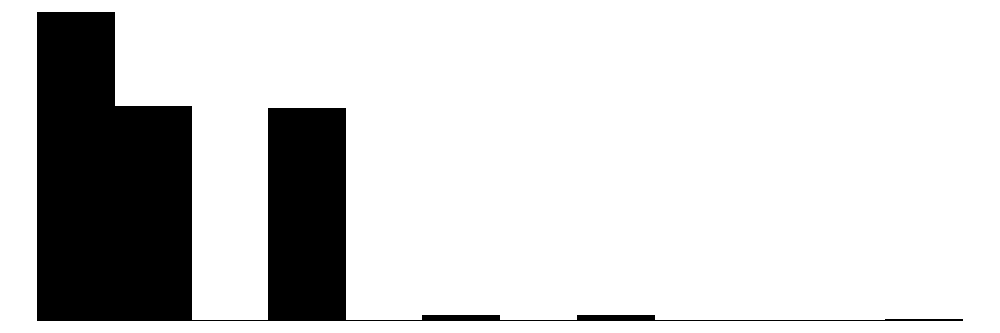 |
| stays_in_week | 12 | 0 | 2.3 | 1.7 | 0.0 | 2.0 | 16.0 | |
| adults | 4 | 0 | 2.0 | 0.5 | 0.0 | 2.0 | 3.0 | 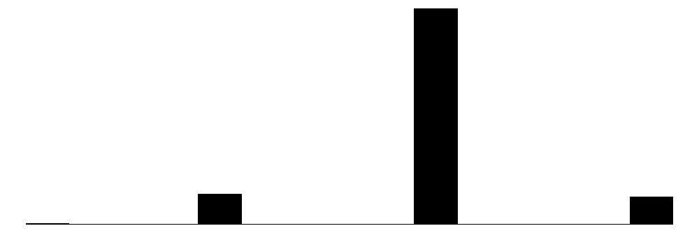 |
| is_repeated_guest | 2 | 0 | 0.0 | 0.1 | 0.0 | 0.0 | 1.0 | 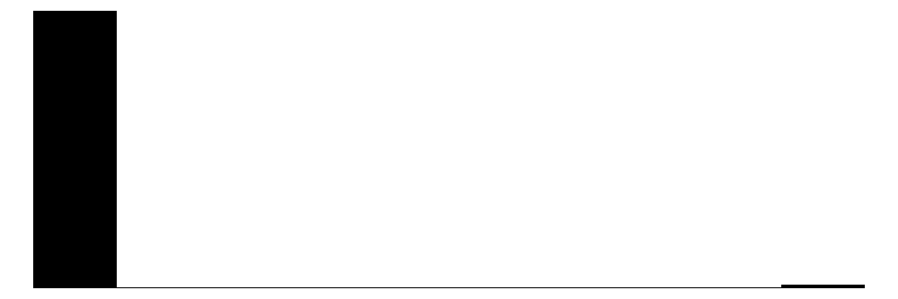 |
| previous_bookings_not_canceled | 4 | 0 | 0.0 | 0.2 | 0.0 | 0.0 | 3.0 | 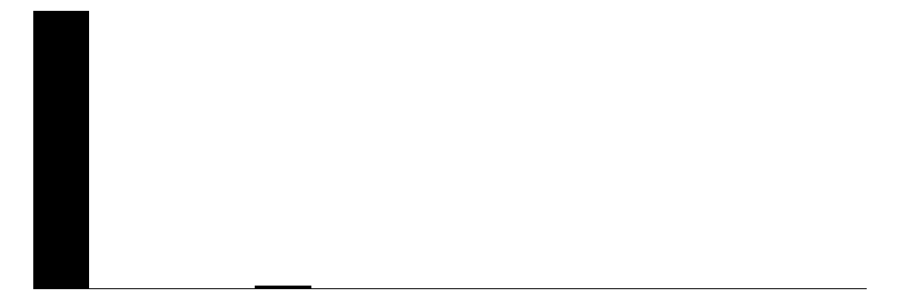 |
| booking_changes | 7 | 0 | 0.3 | 0.8 | 0.0 | 0.0 | 8.0 | 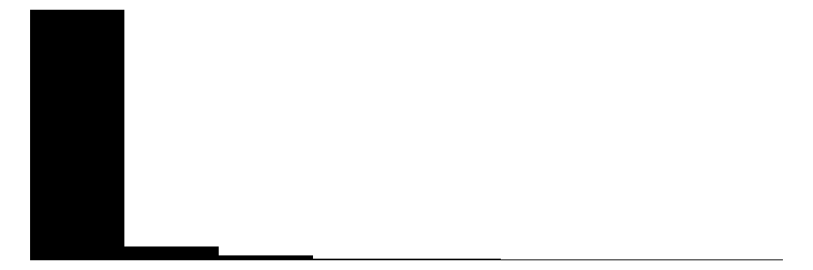 |
| days_in_waiting_list | 5 | 0 | 0.5 | 7.0 | 0.0 | 0.0 | 167.0 | 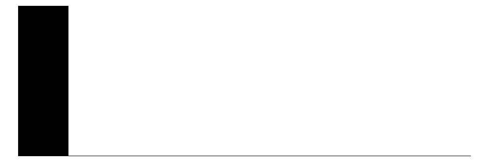 |
| average_daily_rate | 517 | 0 | 106.6 | 45.8 | 0.0 | 97.7 | 311.2 | 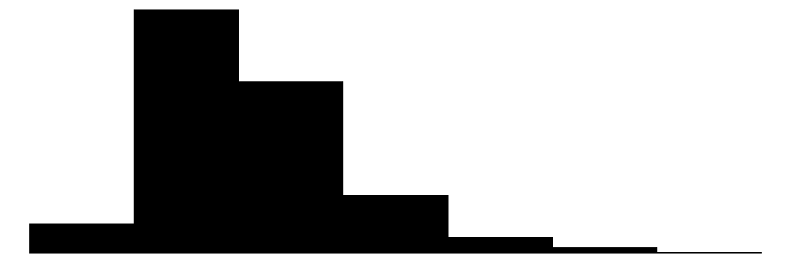 |
| n_special_requests | 6 | 0 | 0.9 | 0.9 | 0.0 | 1.0 | 5.0 | 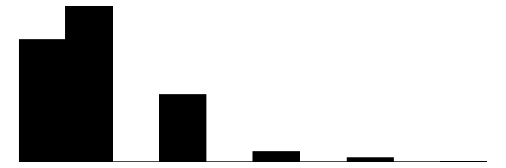 |
| N | % | |||||||
| hotel | City_Hotel | 724 | 76.9 | |||||
| Resort_Hotel | 217 | 23.1 | ||||||
| children | child | 119 | 12.6 | |||||
| no | 822 | 87.4 | ||||||
| meal | BB | 781 | 83.0 | |||||
| FB | 0 | 0.0 | ||||||
| HB | 22 | 2.3 | ||||||
| SC | 138 | 14.7 | ||||||
| Undefined | 0 | 0.0 | ||||||
| market_segment | Aviation | 0 | 0.0 | |||||
| Complementary | 4 | 0.4 | ||||||
| Corporate | 19 | 2.0 | ||||||
| Direct | 116 | 12.3 | ||||||
| Groups | 32 | 3.4 | ||||||
| Offline_TA/TO | 122 | 13.0 | ||||||
| Online_TA | 648 | 68.9 | ||||||
| distribution_channel | Corporate | 21 | 2.2 | |||||
| Direct | 119 | 12.6 | ||||||
| GDS | 1 | 0.1 | ||||||
| TA/TO | 800 | 85.0 | ||||||
| Undefined | 0 | 0.0 | ||||||
| reserved_room | A | 635 | 67.5 | |||||
| B | 14 | 1.5 | ||||||
| C | 8 | 0.9 | ||||||
| D | 181 | 19.2 | ||||||
| E | 48 | 5.1 | ||||||
| F | 22 | 2.3 | ||||||
| G | 28 | 3.0 | ||||||
| H | 5 | 0.5 | ||||||
| L | 0 | 0.0 | ||||||
| assigned_room | A | 520 | 55.3 | |||||
| B | 24 | 2.6 | ||||||
| C | 24 | 2.6 | ||||||
| D | 232 | 24.7 | ||||||
| E | 67 | 7.1 | ||||||
| F | 29 | 3.1 | ||||||
| G | 32 | 3.4 | ||||||
| H | 6 | 0.6 | ||||||
| I | 1 | 0.1 | ||||||
| K | 6 | 0.6 | ||||||
| deposit | No_Deposit | 941 | 100.0 | |||||
| Non_Refund | 0 | 0.0 | ||||||
| Refundable | 0 | 0.0 | ||||||
| customer | Contract | 14 | 1.5 | |||||
| Group | 11 | 1.2 | ||||||
| Transient | 741 | 78.7 | ||||||
| Transient-Party | 175 | 18.6 | ||||||
| required_car_parking_spaces | none | 843 | 89.6 | |||||
| parking | 98 | 10.4 |
Separando observações de treino e teste.
set.seed(123)
splits <- initial_split(hotels_,
strata = children)
hotel_train <- training(splits)
hotel_test <- testing(splits)
set.seed(17)
dados_folds <-
vfold_cv(v = 10, hotel_train, repeats = 1)holidays <- c("AllSouls", "AshWednesday",
"ChristmasEve", "Easter",
"ChristmasDay", "GoodFriday",
"NewYearsDay", "PalmSunday")
children_recipe <-
recipe(children ~ ., data = hotel_train) |>
step_date(arrival_date) |>
step_holiday(arrival_date, holidays = holidays) |>
step_rm(arrival_date) |>
step_dummy(all_nominal_predictors()) |>
step_zv(all_predictors()) |>
# step_normalize(all_predictors())
step_normalize(lead_time, stays_in_weekend, stays_in_week, adults, previous_bookings_not_canceled, booking_changes, days_in_waiting_list, average_daily_rate, n_special_requests)Dados de treino após pré-processamento das variáveis segundo a receita.
receita_hotels_treinada <- prep(children_recipe, hotel_train)
dados_hotels_treino_processed <- bake(receita_hotels_treinada, hotel_train)
dados_hotels_treino_processed |> head()# A tibble: 6 × 68
lead_time stays_in_weekend stays_in_week adults is_repeated_guest
<dbl> <dbl> <dbl> <dbl> <dbl>
1 -0.419 0.101 -0.185 0.0425 0
2 -0.176 1.22 0.373 0.0425 0
3 0.934 1.22 -0.744 0.0425 0
4 1.65 0.101 1.49 0.0425 0
5 -0.206 0.101 -0.185 0.0425 0
6 1.60 -1.02 -0.744 0.0425 0
# ℹ 63 more variables: previous_bookings_not_canceled <dbl>,
# booking_changes <dbl>, days_in_waiting_list <dbl>,
# average_daily_rate <dbl>, n_special_requests <dbl>, children <fct>,
# arrival_date_year <int>, arrival_date_AllSouls <int>,
# arrival_date_AshWednesday <int>, arrival_date_Easter <int>,
# arrival_date_ChristmasDay <int>, arrival_date_GoodFriday <int>,
# arrival_date_NewYearsDay <int>, arrival_date_PalmSunday <int>, …Métodos de classificação.
lreg_spec <-
logistic_reg(penalty = tune(),
mixture = tune()) |>
set_engine("glmnet")
tree_spec <- decision_tree(tree_depth = tune(), min_n = tune(), cost_complexity = tune()) |>
set_engine("rpart") |>
set_mode("classification")
bag_cart_spec <-
bag_tree(tree_depth = tune(), min_n = tune(), cost_complexity = tune()) |>
set_engine("rpart") |>
set_mode("classification")
rforest_spec <- rand_forest(mtry = tune(), min_n = tune(), trees = tune()) |>
set_engine("ranger") |>
set_mode("classification")
xgb_spec <- # evolution of GBM
boost_tree(tree_depth = tune(), learn_rate = tune(), loss_reduction = tune(),
min_n = tune(), sample_size = tune(), trees = tune()) |>
set_engine("xgboost") |>
set_mode("classification")
svm_r_spec <-
svm_rbf(cost = tune(), rbf_sigma = tune()) |>
set_engine("kernlab") |>
set_mode("classification")
svm_p_spec <-
svm_poly(cost = tune(), degree = tune()) |>
set_engine("kernlab") |>
set_mode("classification")
mars_spec <- # method similar to GAM
mars(prod_degree = tune()) |>
set_engine("earth") |>
set_mode("classification")
nnet_spec <-
mlp(hidden_units = tune(), penalty = tune(), epochs = tune()) |>
set_engine("nnet", MaxNWts = 2600) |>
set_mode("classification")
nnet_param <-
nnet_spec |>
extract_parameter_set_dials() |>
update(hidden_units = hidden_units(c(1, 27)))Definindo o worflow.
normalized <-
workflow_set(
preproc = list(normalized = children_recipe),
models = list(
lreg = lreg_spec,
tree = tree_spec,
bagging = bag_cart_spec,
rforest = rforest_spec,
XGB = xgb_spec,
SVM_radial = svm_r_spec,
SVM_poly = svm_p_spec,
MARS = mars_spec,
neural_network = nnet_spec
)
)
normalized# A workflow set/tibble: 9 × 4
wflow_id info option result
<chr> <list> <list> <list>
1 normalized_lreg <tibble [1 × 4]> <opts[0]> <list [0]>
2 normalized_tree <tibble [1 × 4]> <opts[0]> <list [0]>
3 normalized_bagging <tibble [1 × 4]> <opts[0]> <list [0]>
4 normalized_rforest <tibble [1 × 4]> <opts[0]> <list [0]>
5 normalized_XGB <tibble [1 × 4]> <opts[0]> <list [0]>
6 normalized_SVM_radial <tibble [1 × 4]> <opts[0]> <list [0]>
7 normalized_SVM_poly <tibble [1 × 4]> <opts[0]> <list [0]>
8 normalized_MARS <tibble [1 × 4]> <opts[0]> <list [0]>
9 normalized_neural_network <tibble [1 × 4]> <opts[0]> <list [0]>Fazendo modificação no nome dos modelos para simplificá-los.
all_workflows <-
bind_rows(normalized) |>
# Make the workflow ID's a little more simple:
mutate(wflow_id = gsub("(simple_)|(normalized_)", "", wflow_id))
all_workflows# A workflow set/tibble: 9 × 4
wflow_id info option result
<chr> <list> <list> <list>
1 lreg <tibble [1 × 4]> <opts[0]> <list [0]>
2 tree <tibble [1 × 4]> <opts[0]> <list [0]>
3 bagging <tibble [1 × 4]> <opts[0]> <list [0]>
4 rforest <tibble [1 × 4]> <opts[0]> <list [0]>
5 XGB <tibble [1 × 4]> <opts[0]> <list [0]>
6 SVM_radial <tibble [1 × 4]> <opts[0]> <list [0]>
7 SVM_poly <tibble [1 × 4]> <opts[0]> <list [0]>
8 MARS <tibble [1 × 4]> <opts[0]> <list [0]>
9 neural_network <tibble [1 × 4]> <opts[0]> <list [0]>Grid search e validação cruzada.
race_ctrl <-
control_race(
save_pred = TRUE,
parallel_over = "everything",
save_workflow = TRUE
)
race_results <-
all_workflows |>
workflow_map(
"tune_race_anova",
seed = 1236,
resamples = dados_folds,
grid = 25,
control = race_ctrl
)→ A | warning: glm.fit: probabilidades ajustadas numericamente 0 ou 1 ocorreuThere were issues with some computations A: x1There were issues with some computations A: x2There were issues with some computations A: x5There were issues with some computations A: x8There were issues with some computations A: x10There were issues with some computations A: x11There were issues with some computations A: x13There were issues with some computations A: x14There were issues with some computations A: x16
There were issues with some computations A: x16Extraindo métricas de desempenho para avaliar os resultados da validação cruzada.
collect_metrics(race_results) |>
filter(.metric == "accuracy") |>
arrange(desc(mean))# A tibble: 69 × 9
wflow_id .config preproc model .metric .estimator mean n std_err
<chr> <chr> <chr> <chr> <chr> <chr> <dbl> <int> <dbl>
1 SVM_poly Preprocessor… recipe svm_… accura… binary 0.902 10 0.0142
2 SVM_poly Preprocessor… recipe svm_… accura… binary 0.902 10 0.0142
3 SVM_poly Preprocessor… recipe svm_… accura… binary 0.902 10 0.0142
4 SVM_poly Preprocessor… recipe svm_… accura… binary 0.899 10 0.0138
5 SVM_poly Preprocessor… recipe svm_… accura… binary 0.896 10 0.0150
6 lreg Preprocessor… recipe logi… accura… binary 0.895 10 0.0136
7 SVM_radial Preprocessor… recipe svm_… accura… binary 0.895 10 0.0141
8 SVM_poly Preprocessor… recipe svm_… accura… binary 0.895 10 0.0144
9 MARS Preprocessor… recipe mars accura… binary 0.894 10 0.0144
10 SVM_poly Preprocessor… recipe svm_… accura… binary 0.894 10 0.0148
# ℹ 59 more rowscollect_metrics(race_results) |>
filter(.metric == "roc_auc") |>
arrange(desc(mean))# A tibble: 69 × 9
wflow_id .config preproc model .metric .estimator mean n std_err
<chr> <chr> <chr> <chr> <chr> <chr> <dbl> <int> <dbl>
1 rforest Preprocessor1_… recipe rand… roc_auc binary 0.857 10 0.0208
2 rforest Preprocessor1_… recipe rand… roc_auc binary 0.857 10 0.0208
3 rforest Preprocessor1_… recipe rand… roc_auc binary 0.856 10 0.0209
4 rforest Preprocessor1_… recipe rand… roc_auc binary 0.853 10 0.0220
5 rforest Preprocessor1_… recipe rand… roc_auc binary 0.853 10 0.0210
6 rforest Preprocessor1_… recipe rand… roc_auc binary 0.852 10 0.0212
7 rforest Preprocessor1_… recipe rand… roc_auc binary 0.850 10 0.0222
8 bagging Preprocessor1_… recipe bag_… roc_auc binary 0.842 10 0.0255
9 bagging Preprocessor1_… recipe bag_… roc_auc binary 0.842 10 0.0271
10 bagging Preprocessor1_… recipe bag_… roc_auc binary 0.832 10 0.0296
# ℹ 59 more rowsVisualizando desempenho dos métodos.
IC_rmse <- collect_metrics(race_results) |>
filter(.metric == "roc_auc") |>
group_by(wflow_id) |>
filter(mean == min(mean)) |>
group_by(wflow_id) |>
arrange(desc(mean)) |>
ungroup()
IC_r2 <- collect_metrics(race_results) |>
filter(.metric == "accuracy") |>
group_by(wflow_id) |>
filter(mean == max(mean)) |>
group_by(wflow_id) |>
arrange(desc(mean)) |>
ungroup()
IC <- bind_rows(IC_rmse, IC_r2)
ggplot(IC, aes(x = factor(wflow_id, levels = unique(wflow_id)), y = mean)) +
facet_wrap(~.metric, scales = "free") +
geom_point(stat="identity", aes(color = wflow_id), pch = 1) +
geom_errorbar(stat="identity", aes(color = wflow_id,
ymin=mean-1.96*std_err,
ymax=mean+1.96*std_err), width=.2) +
labs(y = "", x = "method") + theme_bw() +
theme(legend.position = "none",
axis.text.x = element_text(angle = 90, vjust = 0.5, hjust=1))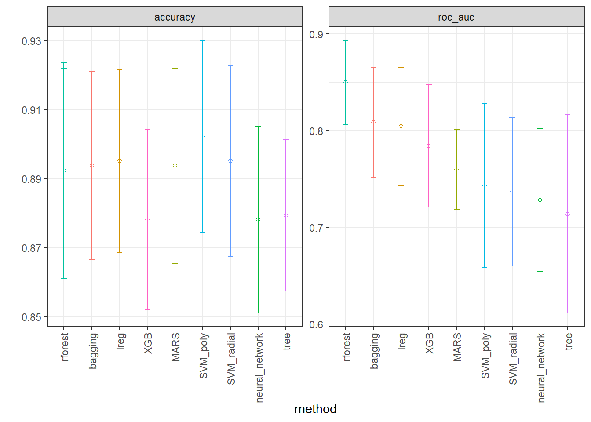
Extraindo níveis dos hiperparâmetros do melhor modelo.
best_roc_auc <-
race_results |>
extract_workflow_set_result("rforest") |>
select_best(metric = "roc_auc")
best_roc_auc # A tibble: 1 × 4
mtry trees min_n .config
<int> <int> <int> <chr>
1 9 250 13 Preprocessor1_Model04Desempenho de teste.
rforest_test_results <-
race_results |>
extract_workflow("rforest") |>
finalize_workflow(best_roc_auc) |>
last_fit(split = splits)
collect_metrics(rforest_test_results)# A tibble: 3 × 4
.metric .estimator .estimate .config
<chr> <chr> <dbl> <chr>
1 accuracy binary 0.881 Preprocessor1_Model1
2 roc_auc binary 0.855 Preprocessor1_Model1
3 brier_class binary 0.0853 Preprocessor1_Model1Obtendo curva ROC para todos os modelos.
calculate_roc <- function(result, model_name) {
best_params <- result |> select_best(metric = "roc_auc")
predictions <- collect_predictions(result, parameters = best_params)
roc_curve(predictions, children, .pred_child) |> mutate(model = model_name)
}
roc_curves <- bind_rows(
calculate_roc(extract_workflow_set_result(race_results, "lreg"), "Logistic Regression"),
calculate_roc(extract_workflow_set_result(race_results, "tree"), "Decision Tree"),
calculate_roc(extract_workflow_set_result(race_results, "bagging"), "Bagging"),
calculate_roc(extract_workflow_set_result(race_results, "rforest"), "Random Forest"),
calculate_roc(extract_workflow_set_result(race_results, "XGB"), "XGBoost"),
calculate_roc(extract_workflow_set_result(race_results, "SVM_radial"), "SVM Radial"),
calculate_roc(extract_workflow_set_result(race_results, "SVM_poly"), "SVM Poly"),
calculate_roc(extract_workflow_set_result(race_results, "MARS"), "MARS"),
calculate_roc(extract_workflow_set_result(race_results, "neural_network"), "Neural Network")
)ggplot(roc_curves, aes(x = 1 - specificity, y = sensitivity, color = model)) +
geom_line() +
labs(x = "1 - Specificity", y = "Sensitivity") +
theme_bw()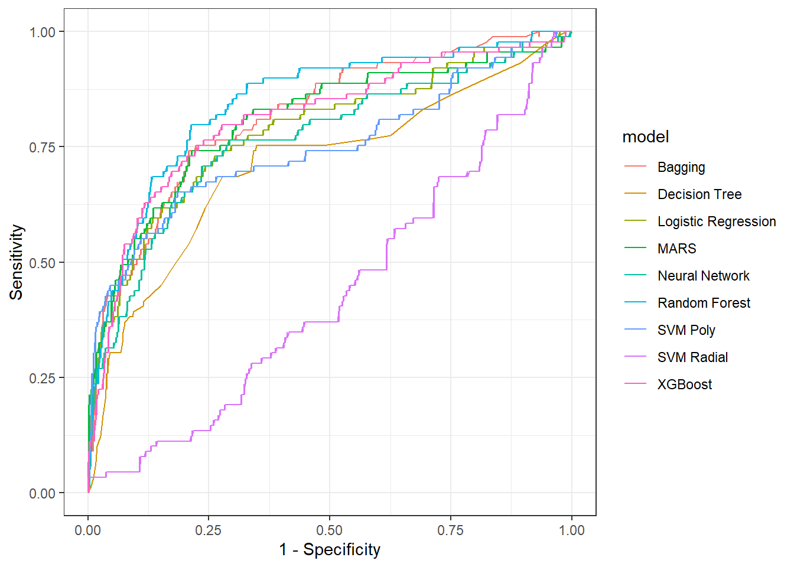
Modelo final.
workflow_rf <-
race_results %>%
extract_workflow(id = "rforest")
workflow_rf══ Workflow ════════════════════════════════════════════════════════════════════
Preprocessor: Recipe
Model: rand_forest()
── Preprocessor ────────────────────────────────────────────────────────────────
6 Recipe Steps
• step_date()
• step_holiday()
• step_rm()
• step_dummy()
• step_zv()
• step_normalize()
── Model ───────────────────────────────────────────────────────────────────────
Random Forest Model Specification (classification)
Main Arguments:
mtry = tune()
trees = tune()
min_n = tune()
Computational engine: ranger fit <-
workflow_rf %>%
finalize_workflow(best_roc_auc) %>%
fit(data = hotel_train)
fit══ Workflow [trained] ══════════════════════════════════════════════════════════
Preprocessor: Recipe
Model: rand_forest()
── Preprocessor ────────────────────────────────────────────────────────────────
6 Recipe Steps
• step_date()
• step_holiday()
• step_rm()
• step_dummy()
• step_zv()
• step_normalize()
── Model ───────────────────────────────────────────────────────────────────────
Ranger result
Call:
ranger::ranger(x = maybe_data_frame(x), y = y, mtry = min_cols(~9L, x), num.trees = ~250L, min.node.size = min_rows(~13L, x), num.threads = 1, verbose = FALSE, seed = sample.int(10^5, 1), probability = TRUE)
Type: Probability estimation
Number of trees: 250
Sample size: 705
Number of independent variables: 67
Mtry: 9
Target node size: 13
Variable importance mode: none
Splitrule: gini
OOB prediction error (Brier s.): 0.08175067 Realizando previsões.
pred_test <- predict(fit, hotel_test)
pred_test |> head()# A tibble: 6 × 1
.pred_class
<fct>
1 no
2 no
3 no
4 no
5 no
6 no Matriz de confusão. Devido a dissiparidade entre as classes o resultado foi muito melhor para a classe dominante. Sugere-se usar mais dados (talvez todos países) para um melhor resultado.
cm <- table(y=hotel_test$children, yhat=pred_test$.pred_class)
cm yhat
y child no
child 5 25
no 2 204O melhor modelo extraido acima diretamente do workflow já tem os níveis ótimos dos hiperparâmetros e pode ser usado para previsão. Entretanto, para avaliar a importância das variáveis, é necessário definir na definição da engine qual método para avaliar a importância das variáveis será usado com o argumento importance. Isso poderia ter sido realizado na definição dos modelos, entretanto, ´como treinamos muito modelos, sugere-se considerar a importancia das variáveis posteriormente, conforme feito à seguir, onde definimos o modelo de floresta aleatória com os hiperparâmetros ótimos extraídos anteriormente e consideramos o método “impurity” que é uma opção para modelos baseados em árvores. A impureza é medida como a melhora que uma variável escolhida em uma nova partição acarreta na função perda do modelo. A importância de uma variável será a soma da impureza acumulada nos particionamentos binários que ela foi considerada. Outra opção seria a permutação com a opção “permutation”, que vale para todos os tipos de modelos, que faz um processo de aleatorização (ou embaralhamento) de cada variável regressora nos dados de teste e mede-se a dfiferença na função perda. Tal diferença é a importância da variável. Quanto maior o impacto no erro do modelo, mais importante é a variável. O método de permutação tem alto custo computacional e não recomenda-se usá-lo no treinamento de múltiplos modelos.
last_rf_mod <-
rand_forest(mtry = 9, min_n = 13, trees = 250) %>%
set_engine("ranger", importance = "impurity") %>%
set_mode("classification")
# the last workflow
last_rf_workflow <-
workflow_rf %>%
update_model(last_rf_mod)
# the last fit
set.seed(345)
last_rf_fit <-
last_rf_workflow %>%
last_fit(splits)Ambos modelos extraídos fit e last_rf_fit podem ser usados para previsão, entretanto, só o último tem informações para ver a importância das variáveis com o vip (variable importance plot).
last_rf_fit |>
extract_fit_parsnip() |>
vip(num_features = 20) + theme_bw()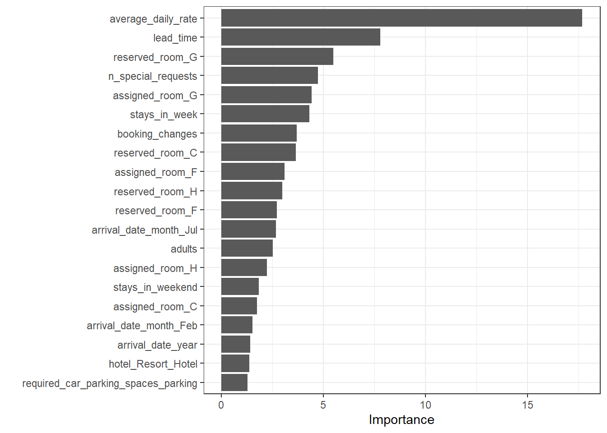
Referências
Gareth, J., Daniela, W., Trevor, H., & Robert, T. (2013). An introduction to statistical learning: with applications in R. Spinger.
Hastie, T., Tibshirani, R., Friedman, J. H., & Friedman, J. H. (2009). The elements of statistical learning: data mining, inference, and prediction (Vol. 2, pp. 1-758). New York: springer.
Kuhn, M., & Silge, J. (2022). Tidy modeling with R: A framework for modeling in the tidyverse. ” O’Reilly Media, Inc.”.